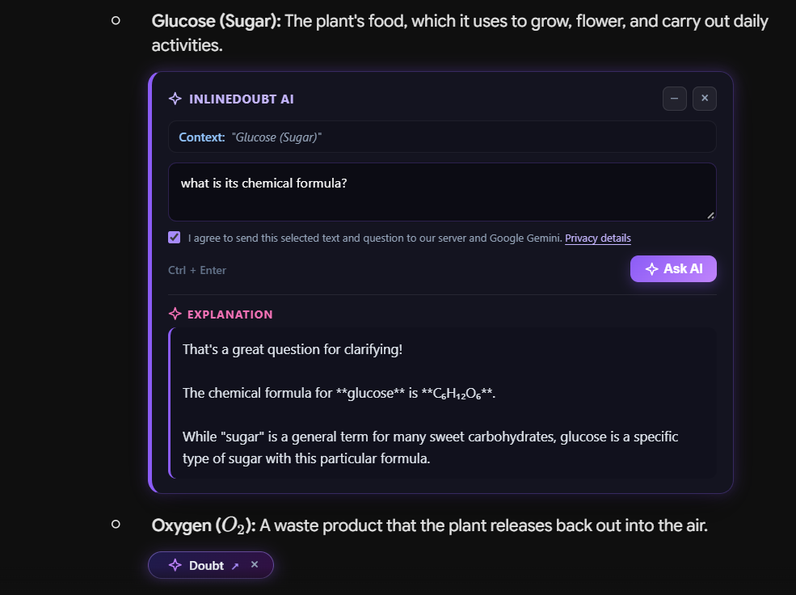

AI agents with boundaries
Give an agent a specific goal and limited tools. Keep consequential actions visible and reviewable.
AI-native products · agent workflows · 2026
My focus is AI-native software: products and agent workflows that combine models, tools, and context to move real tasks forward—with people able to review important actions.
01 — AI systems focus
I want AI to be part of how a product works, not a chatbot added at the end. I explore systems that connect language models to useful context, tools, and clear next steps.
DESIGN BUILDING BLOCKS LLMs · retrieval · tool calling · structured outputs · evaluation · human review
Give an agent a specific goal and limited tools. Keep consequential actions visible and reviewable.
Separate research, extraction, and verification when distinct steps make a workflow easier to inspect and improve.
Put contextual assistance inside the task—grounded in the user’s content and designed to produce useful, structured outcomes.
02 — Projects & experiments
A working browser-extension prototype and an early document-automation blueprint from my exploration of contextual AI.

Get an explanation right where a conversation gets confusing. Select a passage in an AI chat and ask about it without losing your place.
Turn inconsistent invoice PDFs into organized line items and a clean CSV, ready for the next step in a finance workflow.
InlineDoubt AI is a working prototype; its source includes setup instructions for trying it in Chrome. Invoice-Extract remains a blueprint.
03 — How I work
Good automation gives people their attention back.
I start with the friction, keep the experience simple, and use AI where it makes a real difference. The result should be easy to trust and act on.
04 — On the drawing board
More small tools
for complex work.
Contact
I’m interested in practical AI and automation work. Get in touch to compare notes or discuss a project.
Email me